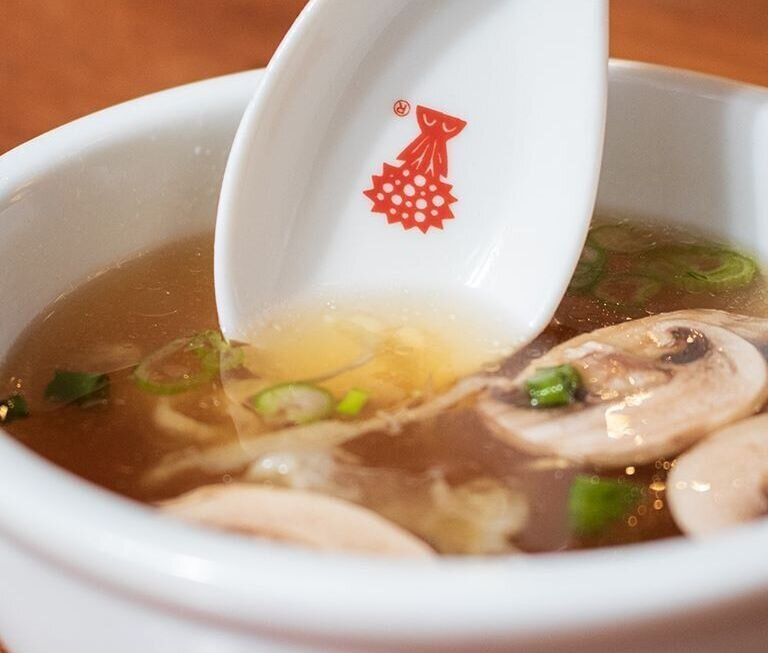

Hibachi Onion Soup

Totally not stolen recipe for awesome hibachi style clear onion soup
Try pouring this stuff all over your loved ones, they'll thank you later!!
Ingredients:
- 2 T soybean oil>
- 4 garlic clove (crushed)
- 1 ½ cup (350 ml) onion, rough chopped
- ¾ cup (175 ml) carrot, rough chopped
- ¾ cup (175 ml) celery, rough chopped
- ½ t (4 gram) Swiss Chalet HACO Brand chicken flavor base paste, dissolved in 1 cup boiling water
- ½ t (4 gram) Swiss Chalet HACO brand beef flavor base paste, dissolved in 1 cup boiling water
- 6 cup (1.4 liter) water
- 2 t (6 gram) kosher salt (for simmering)
- 1/2 t (1.5 gram) whole peppercorn
- Kosher salt (season to taste, after cooking)
- Thinly sliced button mushrooms, to taste
- Thinly sliced green onion, to taste
- French's fried onions, to taste
Directions:
- Heat oil in medium stock-pot
- Saute garlic until lightly browned, remove from pot
- Saute carrot, celery and onion until caramelized
- Add garlic, beef and chicken stock, simmer for 3 minutes
- Add water, salt and peppercorns, bring to a boil, reduce to very low simmer for 45 minutes 6. Strain soup through a fine mesh strainer
- After soup has cooled slightly, adjust seasoning with extra kosher salt